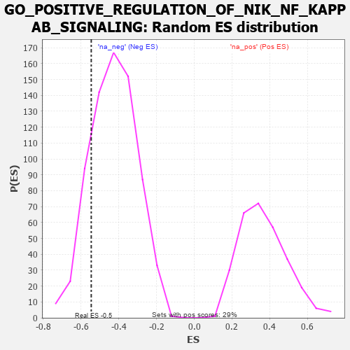

| | | Dataset | 7d |
| Phenotype | NoPhenotypeAvailable |
| Upregulated in class | na_neg |
| GeneSet | GO_POSITIVE_REGULATION_OF_NIK_NF_KAPPAB_SIGNALING |
| Enrichment Score (ES) | -0.546233 |
| Normalized Enrichment Score (NES) | -1.2746525 |
| Nominal p-value | 0.17372881 |
| FDR q-value | 0.5011558 |
| FWER p-Value | 1.0 |
Table: GSEA Results Summary
 Fig 1: Enrichment plot: GO_POSITIVE_REGULATION_OF_NIK_NF_KAPPAB_SIGNALING
Fig 1: Enrichment plot: GO_POSITIVE_REGULATION_OF_NIK_NF_KAPPAB_SIGNALING
Profile of the Running ES Score & Positions of GeneSet Members on the Rank Ordered List
| PROBE | GENE SYMBOL | GENE_TITLE | RANK IN GENE LIST | RANK METRIC SCORE | RUNNING ES | CORE ENRICHMENT | | 1 | PDCD4 | | | 941 | 0.497 | -0.0703 | No |
| 2 | NFAT5 | | | 1856 | 0.326 | -0.1538 | No |
| 3 | SASH1 | | | 2682 | 0.201 | -0.2381 | No |
| 4 | PHB2 | | | 2712 | 0.197 | -0.2228 | No |
| 5 | DDX3X | | | 3388 | 0.091 | -0.2988 | No |
| 6 | ILK | | | 4510 | -0.096 | -0.4305 | No |
| 7 | EP300 | | | 4941 | -0.186 | -0.4666 | No |
| 8 | SPHK1 | | | 5576 | -0.339 | -0.5136 | Yes |
| 9 | TLR2 | | | 5761 | -0.395 | -0.4986 | Yes |
| 10 | CALR | | | 6077 | -0.499 | -0.4901 | Yes |
| 11 | MALT1 | | | 6432 | -0.634 | -0.4736 | Yes |
| 12 | EGFR | | | 6708 | -0.765 | -0.4344 | Yes |
| 13 | TRAF4 | | | 7573 | -1.514 | -0.3972 | Yes |
| 14 | TRAF6 | | | 7818 | -2.157 | -0.2200 | Yes |
| 15 | TRAF2 | | | 7861 | -2.481 | 0.0138 | Yes |
Table: GSEA details [plain text format]

Fig 2: GO_POSITIVE_REGULATION_OF_NIK_NF_KAPPAB_SIGNALING: Random ES distribution
Gene set null distribution of ES for GO_POSITIVE_REGULATION_OF_NIK_NF_KAPPAB_SIGNALING